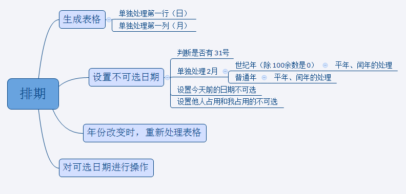

思维导图
调用方法：
$('#timeTable').task1({ // timeTable是排期表格外层div的id
myTime:['2016-1-1','2016-2-2','2016-3-3','2017-6-6'],
othersTime:['2016-6-1','2016-10-1','2017-8-8']
});
数据格式：
{
myTime:['2016-1-1','2016-2-2','2016-3-3','2017-6-6'], //我占用的日期
othersTime:['2016-6-1','2016-10-1','2017-8-8'] //他人占用的日期
}